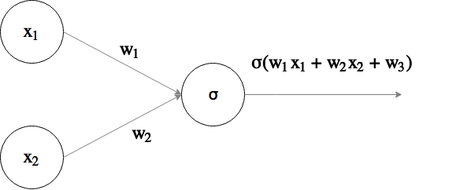
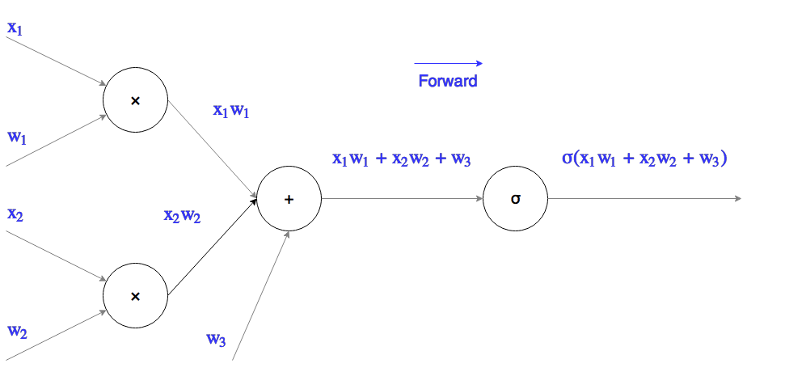
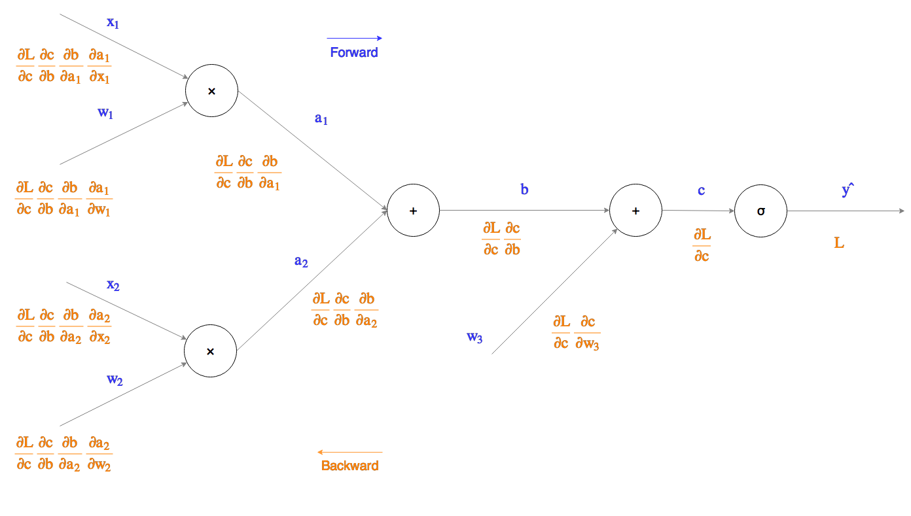

Category: 0.1: Beyond the scope of the book : See category for details
Category: hard (5)
Fill in the blanks
comment:
Tests the student's knowledge of neural networks and the circuit
interpretation of backpropagation.
Complexity 5 because it is out the scope of the book and requires
both calculation, and insight to derive the derivative of
$\sigma(x)$ in terms of itself
Neural networks (NNs) are a class versatile models used to great
success in many different domains. A neural network is a directed
graph of nodes and edges. Nodes (neurons), either represent inputs
to the model or compute some function of their inputs. Edges
represent connections between adjacent neurons, they have a weight
associated with them. Most neurons compute the weighted sum of their
inputs followed by a non-linear function application (such as the
$\sigma$, or $\tanh$ function).
NNs can be trained using a technique called
backpropagation. The main idea behind backpropagation
is the rate of change of the loss of an output neuron can be
calculated with respect to the weights of the network through
repeated application of the chain rule. The weights of the network
can then be updated using gradient descent to reduce the loss.
One might expect backpropagation to be very complicated as the
number of neurons between an input and output neuron can be large,
leading to a very complex gradient function, however the chain rule
means we can decompose this into a series of simple calculations
evaluating the derivative of the output of each neuron with respect
to its input, these can then be combined through successive
multiplications to calculate the change in loss with respect to a
specific weight (see automatic
differentiation).
A simple network is presented in Fig 1 composed of two
input neurons and one output neuron. The output neuron computes the
weighted sum of its inputs and applies the sigmoid function to
produce its output.
We will investigate how neural networks function by forward
propagating (computing the output of the last layer of the network
from a set of inputs), then backpropagating through the network to
perform weight updates.
Mathematical functions can be thought of as gates in a circuit that
take inputs and produce an ouput, we will redraw the network in a
circuit style breaking down the network into gates that we use to
help perform back propagation.
The network in Fig 1 has been redrawn as a circuit in Fig 2. Forward
propagation is accomplished by applying the function specified in
the node to its inputs, the calculations necessary to compute the
output of each node are specified on the arrow between adjacent
neurons. For the initial weights values $(w_1, w_2, w_3) = (2, -3,
-3)$, and training example $(x_1, x_2) = (-1, -2)$, compute the
top labelled values (those computed during forward propagation) in
Fig 3.
$a_1$
(-2)
$a_2$
(6)
$b$
(4)
$c$
(1)
$\hat{y}$
(0.73)
Having got a feel for how forward propagation works, we'll now
show you how to backpropagate. When training the network we need
some way of quantifying the difference in predicted output to the
expected output (ground truth). Loss functions are used to compute
this difference, some common examples of loss functions include
cross-entropy loss; and euclidean loss, the scaled sum of the
squared error of each output neuron. Our example only has a single
output neuron, so for the sake of simplicity we'll define loss as
the difference between the output and the expected output.
Our goal is to find
$$\nabla_{w} L = \left[
\frac{\partial L}{\partial w_1},
\frac{\partial L}{\partial w_2},
\ldots,
\frac{\partial L}{\partial w_k}
\right]$$
Each term in the vector defines how the loss changes as you
change a specific weight. $L$ represents a surface in a $k$
dimensional space (if we hold $x$ constant), $\nabla_{w} L$ is the
gradient at a specific point in that space defined by the current
weights of the network. Since we want to reduce the loss and make
our network more accurate, we can use gradient descent to traverse
the surface to a hollow, this is not necessarily a global minima,
but in practice gradient descent works well and produces networks
that successfully function in their task.
Let's look at a component of $\nabla_w L$, and figure out how to
derive it.
$$\frac{\partial L}{\partial w_1}$$
Recall this represents how the loss of the network changes as we
change weight $w_1$. We can decompose this into the product of
multiple partial derivatives, each partial derivative representing
how the output of a neuron changes with respect to its input, until
we reach the beginning of the network.
The input to each neuron has been labelled with a variable name on
Fig 2, the partial derivatives of the loss with respect to the weights are:
$$\frac{\partial L}{\partial w_1} = \frac{\partial L}{\partial b}
\frac{\partial b}{\partial a_1}
\frac{\partial a_1}{\partial w_1}$$
$$\frac{\partial L}{\partial w_2} = \frac{\partial L}{\partial b}
\frac{\partial b}{\partial a_2}
\frac{\partial a_2}{\partial w_2}$$
If we compute the analytical derivative of the output of each
neuron with respect to its input, we can construct an algorithm to
work backwards through the network to compute the gradient of the
loss with respect to the weights.
Compute the following derivatives:
$$\frac{d}{dx}(x + y)$$
$$\frac{d}{dx}(x \cdot y)$$
$$\frac{d}{dx}(\sigma(y))$$
Where
$$\sigma(x) = \frac{1}{1 + e^x}$$
Finally we can backpropagate and find out how changing the weights
affects the loss, starting from the output gate we can trace our
way back to an input weight by accumulating the derivative product
(i.e. incrementally build up the full partial derivative via the
chain rule). As we traverse a gate, we compute the partial
derivative and multiply the accumulator by the derivative until
reaching the input weight.
Following the above process, backpropagate the circuit in Fig 3.
What are the following partial derivatives?
$\frac{\partial L}{\partial w_1}$ =
(-0.20)
$\frac{\partial L}{\partial w_2}$ =
(-0.40)
$\frac{\partial L}{\partial w_3}$ =
(0.20)
explanation: 1 blank: See the workings for derivation 2 blank: See the workings for derivation 3 blank: See the workings for derivation 4 blank: See the workings for derivation 5 blank: See the workings for derivation 6 blank: See the workings for derivation 7 blank: See the workings for derivation 8 blank: See the workings for derivation
Fig 1: Example neural network Fig 2: Neural network from Fig 1 drawn as a circuit diagram,
showing how to calculate intermediate values in forward propagation Fig 3: Neural network from Fig 1 drawn as a circuit diagram,
showing how to calculate intermediate values in back propagation